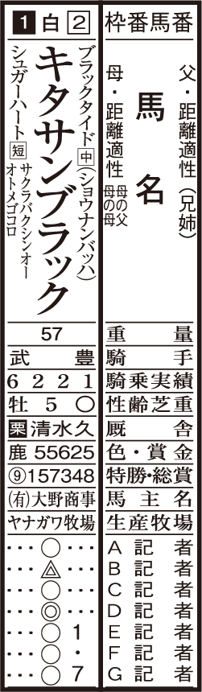
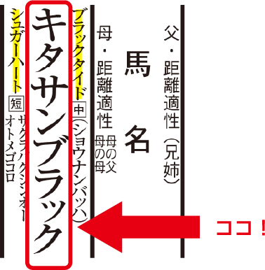
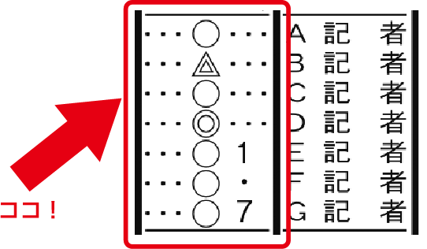

- GⅠのGはなに？
-
GⅠのGはグレードのG！GI（ジーワン）レースの「G」は、GRADE（グレード）のイニシャルに由来します。JRAのGIレースは年間26レース※開催されており、どの馬でも出走できるわけではありません。最高峰のこれらのレースで頂点に立つために、下のクラスから勝ち上がりを目指し日々切磋琢磨しています。
※中山大障害、中山グランドジャンプを含む
- レースは1日に何回行われる？
-
次のレースは、けっこうすぐ。1日最大12レースがJRAの競馬場で行われています。第1レースは10時ごろスタートし16時半にはすべてのレースが終了。次のレースまでの間に予想をしたり、パドックを見たりして楽しんでみましょう。基本的には第11レースがその日のメインレースとなり、賞金が高額なGⅠレースなど注目度の高いレースを実施。レースの時間を確認し、推し馬や騎手を見逃さないようにしましょう。
- コースの種類は芝となに？
-
芝と、ダートがある。JRAの全10競馬場は、外側に芝コースがあり、その内側にはダートコースがあります。青々とした芝生の上を颯爽と走る馬のスピード、砂の上を力強く駆け抜ける馬の迫力。芝と、ダート、ぜひ両方のレースを楽しんでください。
- ゴールはどこ？
-
スタートは色々、ゴールはひとつ！JRAのレースは芝コース、ダートコース、障害コースで行われ、様々な距離体系が存在します。
ゴール板は芝、ダートコースともにスタンド前の一箇所しかありません。
たとえば芝コースの場合は、1000ｍ～3600mまで幅広い距離のレースが行われますが、レースに合わせて、それぞれスタート地点が設定されています。
ゴール板を目指して白熱の攻防戦を繰り広げるサラブレッドたちの姿を見ると、応援にも力が入ります。
もっと見る
- 馬のオスメスなんと呼ぶ？
-
オス：牡馬＝ぼば/メス：牝馬＝ひんばレースに出走する馬の性別は以下のように表記されます。「牡馬」＝ぼば（オス）「牝馬」＝ひんば（メス）「騙馬」＝せんば（去勢された牡馬）となります。まずはこの読み方を覚えてください。多くのレースは性別に関わりなく出走できますが、牝馬だけに出走が限定されるレースもあります。
- 馬の視界は何度？
-
馬の視界は350°！（見え過ぎ！）馬の目は顔の側面にあり、視野が広過ぎるため、横や後ろからくる他の馬を気にしたり、集中力が散漫になることも。そのため、視界の一部を直接遮ることにより馬の意識を競走に集中させるブリンカーや、影などに驚かないように下方を見えにくくするシャドーロールなど、様々な馬具をつけて走る馬もいます。
- いろいろな毛色はなぜ？
-
“十馬十色”です。サラブレッドの毛色は、全部で8種類に分けられます。馬の毛色は概ね、遺伝子などの影響やその馬の血統によって決まります。中には突然変異で白毛の馬が産まれる事もあります。上品で真っ白な馬や、きれいな栗毛馬等、サラブレッドの毛色に注目してみてはいかがでしょうか。
- 騎手の帽子の色はラッキーカラー？
-
帽子の色は、枠番で決まる。JRAのレースでは出走馬を抽選で1枠から8枠に振り分けます。枠番に応じた色の帽子を騎手が被ることになります。レースを見る時、自分の応援する馬がどこにいるのか、帽子の色がわかっていると見分け易くなります。また、色を選んで賭ける馬券もあるのでラッキーカラーに思いを託してレースを楽しんでみてはいかがでしょうか。
- 馬名は何文字でも大丈夫？
-
馬名は、カタカナ9文字まで。日本では、競走馬の名前はカタカナで9文字以内と決められています。父名や母名などから連想してつけられる馬名もありますが、ネコパンチ、ビックリシタナモー、など、思わずクスッとしてしまうような珍しい名前の馬もいます。自分の気になった名前の馬を応援しに競馬場へ行ってみてはいかがでしょうか。
- 馬券はどこで買えるの？
-
全国のJRA競馬場とWINS！馬券を買える場所はJRAの競馬場と全国にあるWINS（ウインズ）。直接行けない場合はインターネット投票（※要会員登録）でも馬券が買えちゃいます！
- ここから、どんな情報を
読み取ることができるかな？ - 
- このレースの出走馬は？
-
キタサンブラック
memo上の画像から出走馬のお父さんとお母さんも読み取れるよ。
お父さん：ブラックタイド
お母さん：シュガーハート
- この馬がつけるゼッケンの
番号（馬番号）は？
- 騎乗する騎手は誰？
- 専門家から見て今回の評価は？
-
ここに書いてあるよ。
memoそれぞれの印の意味はわかるかな？
◎：本命
⇒最も勝つ確率が高いと思う馬
○：対抗
⇒本命に対抗できると思う馬△などの印の意味を詳しく知りたい方はセミナーでご案内します！